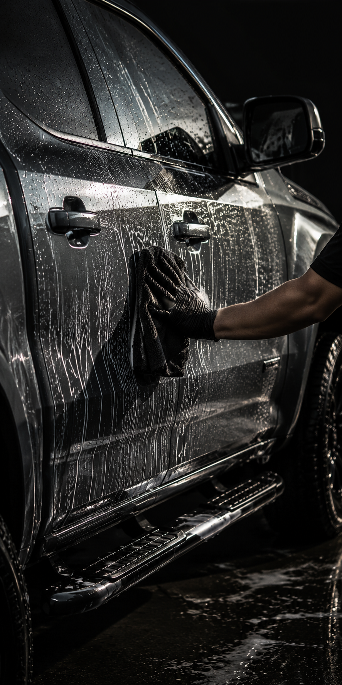
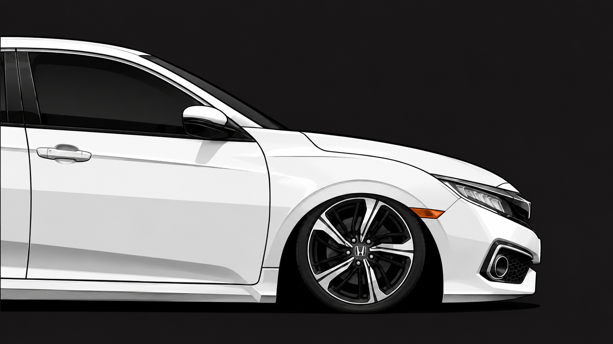

VITRIFI-
CACAO
Brilho profundo, protecao hidrofobica e defesa duradoura para uma pintura sempre marcante.
Saiba Mais#1 Estetica Automotiva Delivery Premium
Brilho profundo, protecao hidrofobica e defesa duradoura para uma pintura sempre marcante.
Saiba MaisRemocao de marcas, restauracao de brilho e acabamento refinado antes da protecao.
Saiba MaisCuidado interno e externo no local, com o mesmo padrao de um studio especializado.
Saiba Mais

A STREET nasceu com um padrao simples: todo veiculo deve sair com a superficie mais limpa, reflexos mais definidos e um resultado que pareca intencional em cada detalhe.
De carros de uso diario a projetos de entusiastas, nosso processo e cuidadoso onde precisa ser e eficiente onde deve ser. A pintura e avaliada, o interior e tratado com criterio e cada superficie recebe o produto correto.
Escolha vitrificacao, polimento tecnico ou estetica delivery quando quiser resultado profissional sem precisar deslocar o veiculo.
AgendarO carro voltou com profundidade real na pintura. A comunicacao foi clara, o horario foi cumprido e o acabamento ficou melhor do que eu esperava.
Fizeram todo o atendimento na minha garagem. Interior, rodas e vidros ficaram impecaveis, sem aquele aspecto engordurado de servico apressado.
O polimento fez muita diferenca sob luz direta. As marcas sumiram e o brilho ficou limpo, controlado e sem exagero.
Fiz a vitrificacao depois do polimento e a repelencia da agua ficou excelente. Agora o carro esta muito mais facil de lavar.
Cuidadosos, organizados e profissionais. E o tipo de trabalho em que da para perceber que cada painel foi revisado antes de finalizar.
Sim. Levamos equipamentos, produtos e processo para sua casa, trabalho ou local combinado, desde que exista um espaco seguro ao redor do veiculo.
Uma estetica de manutencao pode levar algumas horas. Polimento tecnico e vitrificacao podem ocupar boa parte do dia ou mais, dependendo do tamanho e estado da pintura.
Se a pintura tem marcas, riscos leves ou aspecto opaco, comece pelo polimento antes da protecao. Se o veiculo precisa de uma limpeza completa, a estetica delivery e o primeiro passo ideal.
Sim. Envie o modelo do veiculo, o objetivo do servico e algumas fotos, se possivel. Confirmamos o melhor pacote e o tempo estimado antes do agendamento.